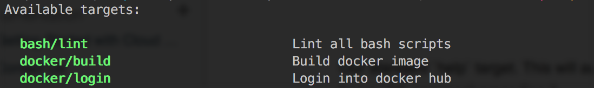

IMPORTANT: All leading whitespace should be tabbed (^T)
Our standard help target. This will automatically generate well-formatted output for any target that has a ## comment preceding it.

Simply add this code snippet to your Makefile and you’ll get this functionality.
## This help screen
help:
@printf "Available targets:\n\n"
@awk '/^[a-zA-Z\-\_0-9%:\\]+/ { \
helpMessage = match(lastLine, /^## (.*)/); \
if (helpMessage) { \
helpCommand = $$1; \
helpMessage = substr(lastLine, RSTART + 3, RLENGTH); \
gsub("\\\\", "", helpCommand); \
gsub(":+$$", "", helpCommand); \
printf " \x1b[32;01m%-35s\x1b[0m %s\n", helpCommand, helpMessage; \
} \
} \
{ lastLine = $$0 }' $(MAKEFILE_LIST) | sort -u
@printf "\n"
Add this to the top of your Makefile to automatically call help if no target passed.
default: help